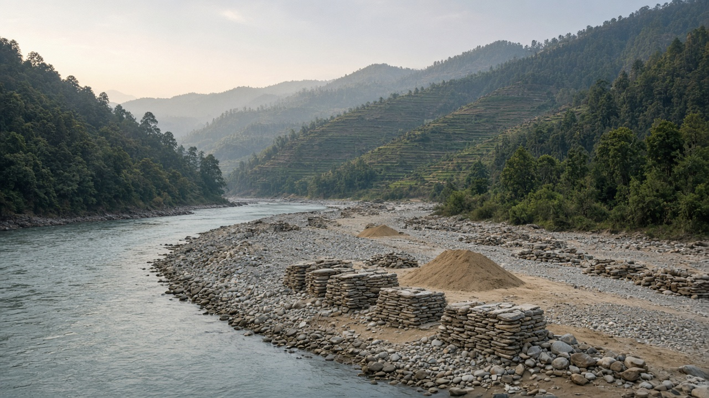
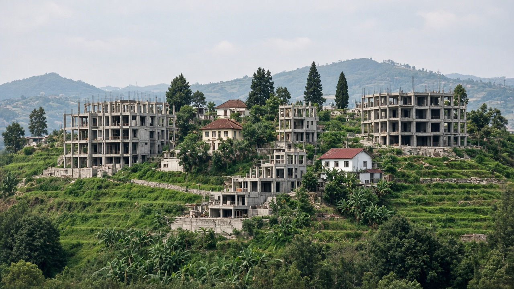
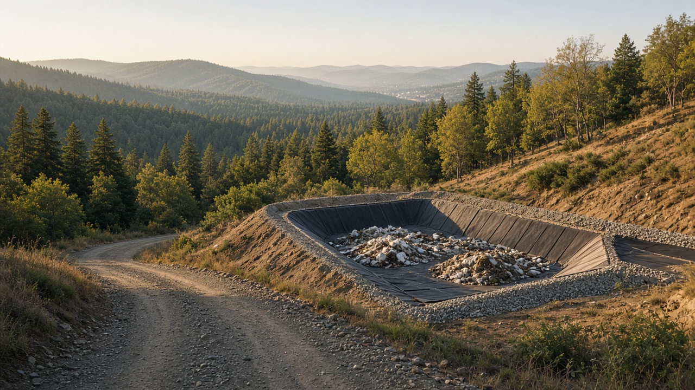

Decentralization and Local Environmental Governance
Published on August 20, 2026

Decentralization assigns environmental functions—waste, local roads, small irrigation, building permits, some forests and lakes—to provincial and local governments. The economic logic is that local officials know site conditions and can match services to demand. The political risk is that local elites capture quarries, riverbeds, and wetlands, or that unfunded mandates leave municipalities with duties and no staff. Assignment of functions must come with assignment of finance and of the right to refuse harmful projects, not only the duty to issue a license quickly.
Local instruments include property-tax incentives for open space, landfill fees, riverbed extraction rules, and participatory planning. Inter-local cooperation is needed for landfills, airsheds, and watersheds that cross boundaries. Customary and user-group institutions already govern many commons; formal local government should recognize rather than overwrite them without cause. Transparency of local contracts for sand, stone, and waste is as important as national assessment theater, because those contracts decide daily loads on rivers and slopes.
Nepal's federal constitution created three spheres of government and listed environment-related powers that still overlap in practice. Capacity gaps are widest in new municipalities facing rapid construction and riverbed mining. Following a building permit or a landfill siting decision shows where discretion really sits. Local environmental governance succeeds when residents can see budgets, monitor dumping, and appeal to a higher body when capture occurs. Fiscal transfers that reward measured local performance can align incentives better than circulars that only add tasks.

विकेन्द्रीकरणले फोहोर, स्थानीय सडक, सानो सिँचाइ, भवन अनुमति, केही वन र ताल जस्ता वातावरणीय कार्य प्रदेश र स्थानीय सरकारलाई दिन्छ। आर्थिक तर्क यो हो कि स्थानीय अधिकारीले स्थल अवस्था चिन्छन् र सेवा मागसँग मिलाउन सक्छन्। राजनीतिक जोखिम यो हो कि स्थानीय अभिजातले खानी, नदी किनार र सिमसार कब्जा गर्छन्, वा बिना कोषका आदेशले नगरपालिकालाई कर्तव्य दिन्छन् कर्मचारी होइन। कार्य बाँडफाँडसँग वित्त बाँडफाँड र हानिकारक आयोजना अस्वीकार गर्ने अधिकार आउनुपर्छ, छिटो इजाजत दिने कर्तव्य मात्र होइन।
स्थानीय औजारमा खुला ठाउँका लागि सम्पत्ति कर प्रोत्साहन, फोहोर थुपार्ने शुल्क, नदी दोहन नियम र सहभागी योजना पर्छन्। सीमा नाघ्ने फोहोर स्थल, वायुक्षेत्र र जलाधारका लागि अन्तर-स्थानीय सहकार्य चाहिन्छ। प्रथागत र उपभोक्ता समूह संस्थाले धेरै साझा स्रोत पहिले नै चलाउँछन्; औपचारिक स्थानीय सरकारले बिना कारण मेटाउनुभन्दा मान्यता दिनुपर्छ। बालुवा, ढुङ्गा र फोहोरका स्थानीय ठेक्काको पारदर्शिता राष्ट्रिय मूल्याङ्कन नाटक जत्तिकै महत्त्वपूर्ण छ, किनभने ती ठेक्काले नदी र भिरमा दैनिक भार तय गर्छन्।
नेपालको सङ्घीय संविधानले तीन तहका सरकार बनायो र व्यवहारमा अझै दोहोरिने वातावरण-सम्बद्ध अधिकार सूचीकृत गर्यो। क्षमता खाडल द्रुत निर्माण र नदी दोहन भोग्ने नयाँ नगरपालिकामा सबैभन्दा चौडा छ। भवन अनुमति वा फोहोर स्थल छनोट पछ्याउँदा विवेक वास्तवमा कहाँ बस्छ देखिन्छ। बासिन्दाले बजेट देख्न, फाल्ने काम अनुगमन गर्न र कब्जा हुँदा माथिल्लो निकायमा पुनरावेदन गर्न सक्दा स्थानीय वातावरण शासन सफल हुन्छ। नापिएको स्थानीय कार्यसम्पादन पुरस्कृत गर्ने राजस्व हस्तान्तरणले कार्य थप्ने परिपत्रभन्दा प्रोत्साहन राम्रो मिलाउँछ।

विकेंद्रीकरण कचरा, स्थानीय सड़क, छोटी सिंचाई, भवन अनुमति, कुछ वन और झील जैसे पर्यावरण कार्य प्रांतीय और स्थानीय सरकारों को सौंपता है। आर्थिक तर्क यह है कि स्थानीय अधिकारी स्थल दशा जानते हैं और सेवा माँग से मिला सकते हैं। राजनीतिक जोखिम यह है कि स्थानीय अभिजात खदान, नदी तट और आर्द्रभूमि कब्जा करें, या बिना कोष आदेश नगरपालिकाओं को कर्तव्य दें कर्मचारी नहीं। कार्य बाँट के साथ वित्त बाँट और हानिकारक परियोजना ठुकराने का अधिकार आना चाहिए, केवल जल्दी लाइसेंस देने का कर्तव्य नहीं।
स्थानीय उपकरणों में खुली जगह के लिए संपत्ति कर प्रोत्साहन, कचरा ढेर शुल्क, नदी दोहन नियम और सहभागी योजना आते हैं। सीमा लाँघने वाले कचरा स्थल, वायुक्षेत्र और जलसंभर के लिए अंतर-स्थानीय सहयोग चाहिए। प्रथागत और उपभोक्ता समूह संस्थाएँ कई साझा स्रोत पहले से चलाती हैं; औपचारिक स्थानीय सरकार को बिना कारण मिटाने से अधिक मान्यता देनी चाहिए। रेत, पत्थर और कचरे के स्थानीय ठेकों की पारदर्शिता राष्ट्रीय मूल्यांकन नाटक जितनी महत्त्वपूर्ण है, क्योंकि वे ठेके नदी और ढलान पर दैनिक भार तय करते हैं।
नेपाल के संघीय संविधान ने तीन स्तर की सरकारें बनाईं और व्यवहार में अभी दोहराए जाने वाले पर्यावरण-संबद्ध अधिकार सूचीबद्ध किए। क्षमता अंतर तेज़ निर्माण और नदी दोहन झेलती नई नगरपालिकाओं में सबसे चौड़ा है। भवन अनुमति या कचरा स्थल चयन का पीछा करने पर विवेक वास्तव में कहाँ बैठता है दिखता है। निवासी बजट देख सकें, फेंक निगरानी कर सकें और कब्जा होने पर ऊपरी निकाय में अपील कर सकें तो स्थानीय पर्यावरण शासन सफल होता है। नापे स्थानीय प्रदर्शन पुरस्कृत करने वाले राजकोषीय अंतरण कार्य जोड़ने वाले परिपत्रों से प्रोत्साहन बेहतर मिलाते हैं।